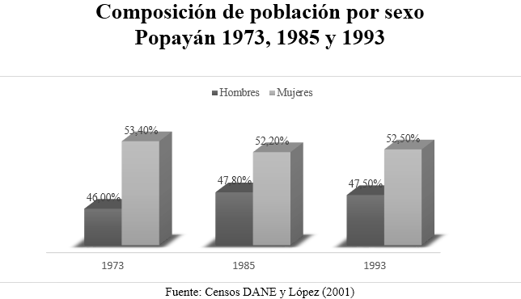
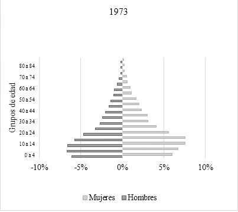
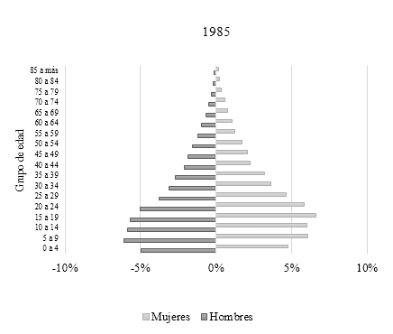
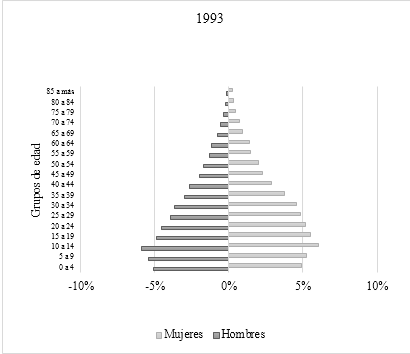
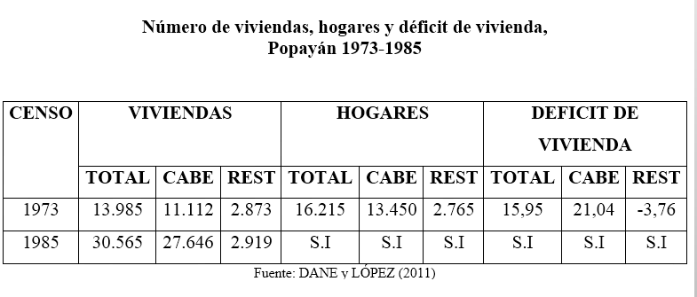
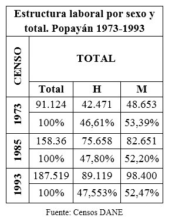
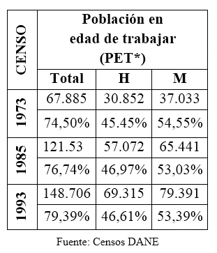
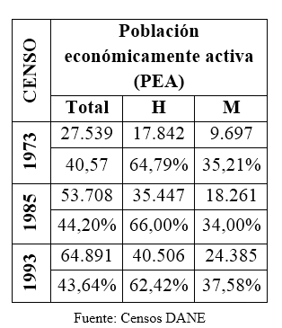
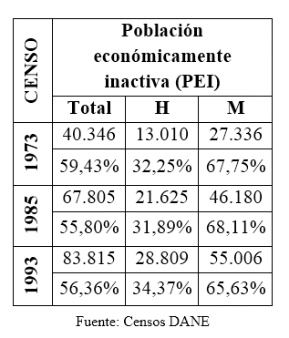

La transformación poblacional en la ciudad de Popayán, entre los años de 1973-1993, fue lenta y considerando la variable tanto de hombres como de mujeres, presentó un receso como resultado de la pérdida significativa de población en 1973 para los hombres y en 1985 para el caso de las mujeres. Respecto el aumento inusual de mujeres en los indicadores poblacionales, en ambos casos ocurrió por procesos migratorios que le dieron dinamismo a esta variable. Claro está, sin desconocer el aporte que brindó el terremoto de 1983, porque generó una red de oportunidades y con ello, un incentivo para favorecer el movimiento migratorio en la región.
Características
Sociodemográficas
La estructura etaria permite establecer el comportamiento y los cambios sociales acaecidos en la ciudad. Así, en 1973 el índice fue progresivo porque las series de natalidad y mortalidad se mantuvieron altas, de ahí que la base de la pirámide es prácticamente ancha si se observa su proporción en la Gráfica correspondiente al año de 1973, lo que expresa la presencia de una población eminentemente joven. De modo similar, entre 1985 y 1993 las condiciones son semejantes expresando que los índices de natalidad y mortalidad fueron altos, y con una ampliación descontrolada.
La población con mayor índice participativo estuvo entre los 14 y 65 años, tuvieron un 57% de participación en 1973 y 62% en 1985 y 1993, lo que significa que proporcionalmente hubo un incremento poblacional y de participación laboral. Teniendo en cuenta que en el rango de edad se puede encontrar la población joven, adulta y vieja, o anterior esto implica una relación significativa con la tasa de dependencia, porque muestra un índice inicial de 75% que desciende a 60% en 1985 y para 1993 se ubica en 59%.
En cuanto al envejecimiento de la población, se nota que decrece gracias al movimiento poblacional de dependencia, porque se presentaba un fenómeno donde los ritmos iniciaron en 1973 con un 7%, ascendiendo a un 10% en 1985 y para 1993 el índice ya alcanzaba el 14%. Así, este crecimiento proporcional y con una variación de 19% respecto adultos mayores, aportó un panorama poblacional con representatividad del grupo de edad señalado.
La proporción poblacional se realiza en grandes grupos de edad, para el índice entre los menores de 15 años, en el periodo hubo una variación de 5,6%. Entre 14 y 64 años, fue de 5, 15%. En mayores de 65 años, la diferencia se mantuvo entre 0,57%, lo que ilustra que los grupos tuvieron un crecimiento y comportamiento significativo de crecimiento paulatino.
En consideración de Flórez, esta estructura etaria, “ha tenido implicaciones sociales y económicas afectando la demanda de servicios sociales, de educación, salud, oferta de mano de obra y el consumo de infraestructura y productos de consumo final”.
La autora analiza el proceso demográfico colombiano durante el siglo XX en Colombia y para nuestro interés, los resultados del trabajo ilustran el panorama Nacional; de manera que son una síntesis de los cambios experimentados por el pueblo colombiano. En: Flórez, Carmen Elisa. Las transformaciones sociodemográficas en Colombia durante el siglo XX. Banco de la República, Tercer Mundo Editores. Bogotá, 2000.
Para entender la dinámica de la urbanización, es necesario tener en cuenta que puede ser establecida gracias al conjunto de viviendas establecidas en un espacio geográfico que son consideradas el eje de la urbanización y requieren de planificación para albergar bienes y servicios para la población. En este sentido, la estructura poblacional y los componentes de crecimiento natural presentaron una relación recíproca, por cuanto el proceso de transformación y configuración de un nuevo espacio social propio de estos componentes, fue el resultado del movimiento poblacional generado por el fenómeno migratorio. Anterior al evento sísmico, la población payanesa presentaba dificultades para mantener óptimas condiciones de vida, después de sucedido el terremoto todo cambió porque se modificó la cotidianidad. Igualmente, este evento puso en alerta las entidades municipales para solucionar las dificultades que venían con esta tendencia, de manera que se hizo innegable la articulación del ente gubernamental con la ciudadanía, para favorecer la reconstrucción.
Al final, el ámbito laboral avanzó gradualmente con la ampliación de su cobertura, sin embargo los riesgos de una buena ejecución traían consigo redes sociales precarias, discriminación por género, exclusión y marginalidad social. El resultado de las políticas implementadas, generó mayor acceso laboral y desempeño de calidad, así como también inclusión social, protección social, formación para el desarrollo empresarial y productivo en la región.

Las condiciones del sistema de salud obtuvieron buena organización y se superaron en las dos décadas, los costos en las instituciones de salud. Se logró ampliar la atención que fue requerida por los pacientes y los datos estadísticos de los hospitales generaron información valiosa para contextualizar la situación tanto para las hospitalizaciones, intervenciones quirúrgicas y de consulta externa por especialidades De manera que la atención registró mejoras en los servicios de la comunidad.


